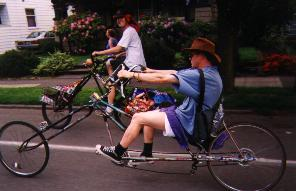

Chunkathlon and late night rink. Damage was minimal. The Swan broke again, and thus has still not survived a single ride. Vlad lost some essential parts. The Cooperator was finally totalled beyond reasonable repair. Angry trog villagers caused more damage to humans: John Krack suffered a bottle rocket down the back of the neck, a few days of tinnitus. L.C. hit in the head with a raw potato and several raw eggs. Kansas smacked in the eye with a raw egg, shell fragments take him out of commission for the weekend. Despite casualties, we let the kids ride the remaining bikes while we cool our heels. At this point Chopagator disappears. Recommend we re-evaluate any activities which entail the possibility of sensitive technology falling into unknown hands.
Denk reports that she was out for a ride when she encountered an unknown individual riding Chopagator in SE Portland. She states that this individual was spitting on the fork (?!) and that he claimed that the bike was given to him by his neighbor. Individual continued in a southerly direction. When asked why she did not apprehend the man, she claimed that she was in a "bad mood". This agent has no recommendations regarding this incident due to the fact that Denk certainly does not go easy on him when in one of her moods.
Someone tells John Krack that he saw some people with a collection of choppers at a house. Krack investigates and observes that these bikes are not of our manufacture, and appear to have been constructed on site.
Recovery mission launched. Team travels to point of last sighting and wanders from there. Encounters crowd of Russian BMX kids and scares them off while attempting to make friends and gain information. Team journeys to house previously observed by John Krack and mills around in front honking horns until someone comes out. Bike-maker is not home but contact is made with his mom, who says that the boy rides around with a trailer and collects scrap metal for his construction projects. Just before returning to the shack, Baby's seat pops off yet again, dropping Loose Nuts onto the rear wheel, which immediately slams him forward until his personal private parts are rammed into the seatpost and sucked between the tire and frame. L.N.'s reaction indicates that this is even less pleasant that it sounds, and that his name now refers to more than his laziness with the wrench. After a nice little rest, he is given extra padding but still has a tender ride home. Recommendation: we can't take much more of this. Morale is low and we're obviously being picked off one by one.
Jeff Wonderful reports that he saw Chopagator leaving the Powerhouse the night before, and that the rider said something unintelligible after Jeff yelled "That's C.H.U.N.K. 666's bike!"
Megulon-5 checks in at his day job in downtown Portland. During an idle gaze out of the window he spies Chopagator parked across the street! Grabs U-lock, races down stairs, and then becomes cautious; stashes U-lock in pants and mills around aimlessly, imitating a random bystander. After fifteen minutes it is obvious that the bikenapper is not in the immediate area, so the U-lock is used to doubly secure it to the rack that it is locked to. The current lock is a rather dinky chain, so the situation isn't quite a Mexican standoff, but a note is left with a phone number anyway; lock-busting is best avoided when possible. A call is received shortly afterwards. Approximate transcript follows.
"I found a lock on my bike..."
"your bike?!"
"yeah, well, sorry about that. I took my lock off."
"Where did you get that bike?"
"I bought it off of this guy on the street, I thought that it was
Chopagator."
"It is Chopagator."
"Well, I paid $40 for it, maybe I could get $20 from
you..."
"You want me to pay you for my stolen
bike?"
"Ok, whatever."
"You knew it was Chopagator but you still bought it?"
"Um, sorry."
Recommendation: Some quicker thinking during the conversation would have been helpful - we still do not know whether this was the individual that Denk encountered, or who the seller was, assuming that this story is true. The level of assholism that this guy possesses is still in question as well. He did treat the bike well, and somebody down the line gave it a nice duct-tape-and-bubble-wrap backrest, a foam cushion, and a front wheel with an aluminum rim (which was immediately delegated to a bike that has a front brake and takes less frontal damage). On the other hand, he knew who we were and some of our jargon, so he could have found us without much trouble, yet he didn't even claim that he had tried to do so. Dude, if you're reading this, what's the story?
Anyway, it doesn't really matter, we have Chopagator back. It appears that our theory is correct: if our bikes are stolen but continue to be ridden in Portland, we'll eventually find them. We should also continue to treat Megulon-5 in the re-evolution tanks. His position provides valuable insight into the inner workings of Portland's elite power cabal, and gives us access to a prime downtown observation post.
(Return to C.H.U.N.K. Operations)
| Copyright 2003 Megulon Five <megulon5@dclxvi.org>. |
|
This work is licensed under a Creative Commons License. | Last modified 12 September 1999. |